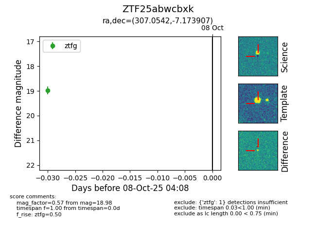

FINK: ZTF25abwcbxk
Lasair: ZTF25abwcbxk
ALeRCE: ZTF25abwcbxk
ZTF25abwcbxk (ztf,fink)
equatorial (ra, dec) = (307.0542,-7.17391)
galactic (l, b) = (37.6236,-24.76143)

last ztfg=18.98
1 ztfg detections